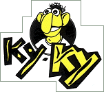
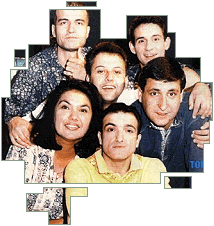
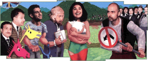

|
Те
започнаха преди 10 години - през 1990 - като студентското предаване "Ку-Ку", родило се след Голямата промяна в България. Това беше един от първите ответни удари на младото поколение срещу политичексия и културен строй, който беше на път да погуби и техните съкровенни мечти за нормален живот. Но дойде 10 ноември - и се появиха те - нощния кошмар на политиците, страха на червените бабички и идолите на няколко поколения българи. Появиха се с гръм и трясък, който щеще да съпътства и все още съпътства цялостната им кариера.
Започнаха в състав, който щеще да се променя още редица пъти, но винаги щяха да си остават любимци на публиката. По принцип те са актьори - с изключение на Слави Трифонов (на който и не му личи, че не е такъв :). В последствие на многото пародии на наши и чужди изпълнители, концепцията за изява на музикалното поприще става реалност с първия им албум "Ръгай чушки в боба". Екипа, който взема участие в изготвянето на албума, успява да го направи едно от тогавашните музикални явления - във време трудно за цялата ни страна. Младите, но и не само те запяха песните на "Ку-Ку" и обрякоха всяка една от следващите им песни да се превръща в химн. Появиха се наградите на "Ку-Ку" академията, чието представяне ставаше своеобразна промоция на музикалните композиции от следващия им албум. През този период екипа преживява първата раздяла със свой член - напуска Август Попов.
Но въпреки загубата, екипа продължаваше смело напред - последва "Шат на патката главата" - албума с преработки на добре познати български песни (и не само) с нов аранжимент и естествено нов хумористичен текст. Това беше първото по-сериозно пародиране на управляващите страната. "Ку-Ку" от "онова" студентското предаване се превърнаха в основна опозиция на управляващата власт. Нямаше спор - предаването и изобщо цялостната идея с албумите, турнетата и т.н. беше това, което никой не допусна да се появи през онези 45 години! Осмиването на политиците, тънките намеци и гръмкия хумор накраха хората да се замислят колко много бяха изпуснали през онези години. И музиката им беше на ниво - "Ку-Ку Бенд" - а начело с Евгени Димитров-Маестрото и екипа, създаващ текстовете, правеха музика на световно ниво. Всеки албум беше съпътстван от съответното турне - друг елемент от световния музикален шоубизнес. В последствие една от частите на предаването - "Рома TV" - се прероди във втория им албум. Концепцията за циганите, които пееха "Рома Рап", "Sweet Chalga in Time", "Сълзите си събирам в капачка от ракия" стана любима на широката публика, а песента "Свети Георги" пожъна невероятен успех за времето си. "Ку-Ку" бяха вече не само студетско предаване, а своеобразни и може би единствени представители на шоубизнеса у нас по това време. Професионализъм се доказваше на всяка крачка при всеки един удобен случай. Опозицията се засили в следващите им албуми. Всичко това беше породено около редицата проблеми, които управляващите се опитаха да създадата на екипа - предаването беше смъкнато от ефир и след редица перипетии на екран се появи "Каналето", обновеното "Ку-Ку".

Последва "Жълта книжка". Жанжоржия и джуджешката мистерия наведоха хора на мисълта, че въпреки Голямата промяна май нищо толкова не се е променило. Албума с двете страни, както го наричаме с приятелите ми, беше някакси тъжен. Но сега вече разбирам защо. На тези млади, оптимистично настроени хора им беше писнално от Голямата промяна и нашата недоносена демокрация. Но явно не само на тях. Музикалната концепция на Джудешката мистерия с оркестъра и цялостното представяне на нещата, донякъде наподобяваше тази на Емир Костурица от филма "Ъндърграунд" ("Underground"). Но това не значи, че трябва да обвиняваме екипа в плагиатство или нещо подобно, защото за какво повече можеш да мислиш на едни Балкани, след 45 години комунизъм, неуспели Големи промени и бушуваща война в съседство. Въпреки всичко хумористичния елемнт не се губеше и в този нелек момент - "Жълта книжка", "Наричане", "Брадва" си бяха в типичния за тях, вече Каналето, стил, а цялостната идея за проследяването на един човешки живот в песни, като музикални картини, отново се оказа печеливша за тях. Трупаното през това време недоволство сигурно в последните месеци преди пускането на следващия им албум "Хъшове" е нарастнало лавинообразно. Силата, с която промоцията подейства на широката аудитория, по-късно щеще да бъде третирана като начална за Нежната революция през януари 1997. Каналето не мислеха така. Казаха, че това просто е естествения ход на историята и те просто са предчуствали. Е, само времето ще покаже какво е било главната причина, но това няма никакво значение, защото в музикално отношение Каналето отново бяха на дневен ред. Преизпетите Възрожденски песни, "Тайсън кючек", "Комбайнеро-интелигентска"-та, и особенно "Не съм избягал", в изпълнение на Камен Воденичаров, накраха хиляди българи да пеят с пълно гърло по стадионите на цялата страна по време на последвалото турне. То беше и най-грандиозното и зашеметяващо до момента, а може би и в цялата история на музикалната ни индустрия. Чувството, като преживяване беше невероятно. Най-сетне и българите можеха да се почустват като граждани на една страна с нормален шоубизнес на световно ниво. Каналето заедно с бенда бяха на върха и никой не можеше да ги помръдне от там. Освен те самите.
Следващия албум "Каналето The Best" наведе на някои съмнения. Много си казаха, че ето беста се зададе значи иде и края. В същия момент се коментираха още две неща - напускането на Васил Василев-Зуека (поредната загуба за екипа) и издаването на първия самостоятелен албум на Славо Трифонов - "Едно ферари с цвят червен". Явно конфликт назряваше и беше само въпрос на време да се видят последствията. Но никой от екипа не говореше за раздяла. Медиите шумяха, хората говореха. Каналето направиха онова специалното предаване, в което отоговаряха на всякакви въпроси и твърдяха, че няма такова нещо като да се разделят. Заблудите не стигнаха далеч. След по-малко от половин година след въпросното предаване на откровенията всичко беше само история. Предаването беше свалено от ефир, започнаха се медийните войни, словесната престрелка между двата обособили се лагера набираше скорост.
Камен, Марта, Точно vs. Слави, Стефан и Ку-Ку Бенда. Мина известно време и се появиха новото "Канале" (по Канал 1 на БНТ) и "Хъшове" (по частната телевизия 7 дни). Първите предавания и от двете страни споменаха по някоя хаплива реплика за бившите си колеги и продължиха нататък. По време на паузата и течащото тогава Световно първенство по футбол във Франция през 1998, се появи и албума на Ку-Ку бенд посветен на събитието. "И да паднем и да бием" стана хит на лятото. Някаква носталгия се чустваше - както по неповторилите се футболни успехи, така и по разпадналия се тийм. Но явно толкова много разностранни личности на едно място трудно се задържат.

Сега вече нещата са различни. Каналето са тези с по-лекия хумор и музика, наподобяваща тази на Дони & Момчил (които също не са вече заедно) и Мариус Куркински, с които и работят и са добри приятели. "Стая с лилави стени" стана един от техните хитове. "Хъшове" издадоха "Девети - трагичен" (пребройте всички албуми и ще видите, че са толкова), където вземаха участие и всички нови актьори от екипа на предаването. Песните "Ад и Рай", "Студио Хъ", "Назад, назад моме Калино" (дует на Слави Трифонов с Нина Николина) станаха поредните хитове на музикалния ни пазар. Проблемите на Слави Трифонов и хъшовете продължаваха - ще има ли, няма
ли да има национален ефир още не се знае, но те се борят, а според мен и си го заслужават. Излязоха още два хитови албума "Вавилон" и "Няма "не искам". Те бяха титуловани само като Слави и Ку-Ку бенд, за разлика от преведущия. Там както винаги се откроиха хитовите композиции - "Френската гимназия", "Нека ме боли", "Няма не искам", "Камикадзе" и т.н. Най-голямата изненада беше преизпятата от Слави "Моя любов" на Васил Найденов, който беше обявил, че музиката на Ку-Ку бенд е чалга (а той самият в момента с някои други звезди на родната ни естрадна сцена, водеха война срещу същата). Тази песен, в изпълнение на Слави можеше да се приеме като някакво примирие и в този конфликт. Георги Милчев-Годжи, бас китариста на Ку-Ку бенд и водещия на "Часа на бенда" в "Хъшове", също издаде самостоятелен албум.
Историята на това явление на родната ни сцена е с отворен край, но ние ще се постараем да я продължаваме и обогатяваме. Надяваме се, че няма да свърши скоро и още дълго ще ни радват, макар и вече разделени. Трябва или не трябва да съжаляваме за настъпилия разлом не знаем и не искаме да даваме мнението си по въпроса. Само времето може да бъде съдник на подобни явления. Но все пак те са тук, правят предаванията си, пишат и изпълняват музиката си. Нека се радваме на това, което съществува сега, а не да страдаме по отминалите им задружни времена. Ку-Ку, Канале, Хъшове - това няма значение. Значение има само факта, че те всичките до един са талантливи - и певци и актьори, и заслужават общественото внимание може би повече от всеки друг представител на шоубизнеса в тази страна.
|